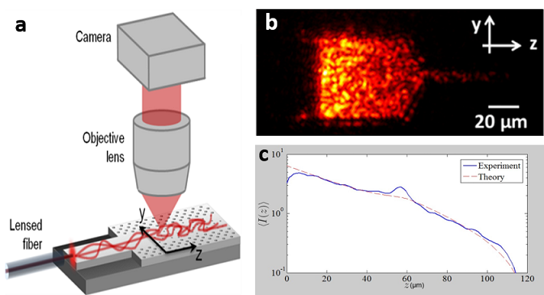
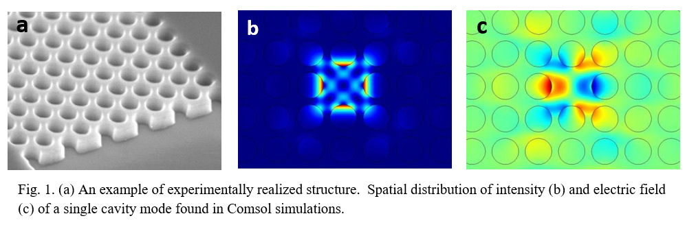
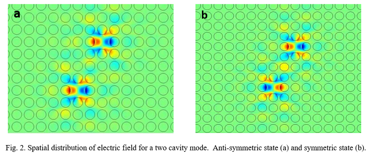
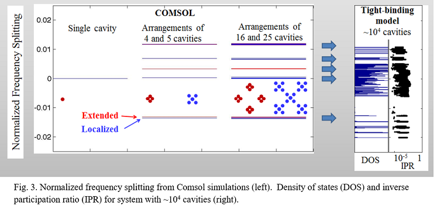

Light Diffusion in a Disordered Photonic Waveguide
The concept of diffusion is fundamental to our understanding of light transport phenomena. Diffusion has been widely used to describe the motion of particles and waves, and it requires only one parameter – the diffusion coefficient. However, for waves, diffusion does not take into account the possibility of interference. Corrections to diffusion theory of waves have been predicted to depend on the distance to the sample boundaries where the waves can escape the medium. Thus, it is possible to affect the diffusion of light by varying the geometry of the system without changing properties of disorder. Diffusion of light through a waveguide was theoretically studied and results were compared to experiment.
The diffusion equation was first shown by Einstein in his theory of Brownian motion, the random motion of particles suspended in a fluid. The equation describes the evolution of the density of particles, where each is undergoing a random walk. When traveling in a random medium, waves are scattered. Some of these may travel in loops, returning to a position they have already visited.
Constructive interference of waves which travel in loops increases energy density at the original position thus giving a localization effect which suppresses diffusion. To account for such suppression, the diffusion coefficient (D(y,z)) is renormalized, and the amount of renormalization is proportional to the return probability (RP) of waves via the looped paths. Near open boundaries, RP is reduced since loops which reach the boundary can escape. Conversely, near reflecting boundaries, RP is increased.
To computationally study position-dependent diffusion, the system was constructed in the commercial package Comsol Multiphysics. Matlab scripts were written to control Comsol simulations, first calculating the return probability (RP) at all points in the structure. This was done by moving a point light source throughout the structure and calculating the light intensity (I) at the source for each source position. This intensity is interpreted as RP which was then used to renormalize D(y,z). The modified D is then used to recalculate RP. Several iterations of this procedure are performed until the changes in D between iterations became small enough to be negligible.
Our collaborators at Yale University, fabricated a disordered waveguide with a silicon-on-insulater wafer and measured the scattered out-of-plane light intensity. Comparison of the measured cross-section integrated intensity of the entire structure to our self-consistent numerical calculations showed good agreement.
Read More  (1) Raktim Sarma, Timofey Golubev, Alexey Yamilov, and Hui Cao. Control of light diffusion in a disordered photonic waveguide. Applied Physics Letters. 105, 041104 (2014)Coexistence of extended and localized states in Thue-Morse array of optical cavities
Thue-Morse sequence is a prime example of deterministic aperiodic systems (DAS) with singular-continuous structure spectra. These systems lack the simple pattern that periodic systems have, but are still built using predetermined mathematical rules. They exhibit a variety of unusual properties not found in either random or ordered systems. I report on a study of optical properties of a two-dimensional Thue-Morse-based array of micro-cavities. Under realistic conditions, tight-binding description is employed to investigate optical spectra of the system and spatial extent of its eigenstates. We observe coexistence of localized and delocalized states in narrow spectral regions and provide an explanation for this phenomenon.
The goal of this work was to demonstrate the possibility of studying light transport in 2D photonic Thue-Morse DAS with the tight-binding model. The tight-binding model has been a powerful tool in studies of electronic properties of quasi-crystals. It is most effective for strong atomic potentials where electrons move mostly around a single atom with a low probability of being found near neighboring atoms. Because photons, unlike electrons, cannot be easily confined by single scattering centers, a tight-binding description is not usually applicable. This limitation can be overcome by creating optical cavities with structural defects inside a photonic crystal. Photons may be confined in individual cavities and tunnel to adjacent cavities
The commercial package Comsol Multiphysics was used to construct a realistic Thue-Morse based array of micro-cavities which can be fabricated with photolithography. Finite difference frequency domain calculations were used to calculate the resonant mode of a single cavity, formed by missing one hole in an otherwise perfect square lattice. It was verified that this cavity supports only one tightly confined mode with an eigenfrequency that is inside the photonic band gap of the lattice. The numerical values of the pairwise coupling coefficients, which describe the degree of interaction between a pair of cavities, are found from 2D simulations. Spatial distribution of electric field for the two eigenstates of a two cavity mode are shown in Fig. 2.
The numerical values of the pairwise coupling coefficients, which describe the degree of interaction between a pair of cavities, are found from 2D simulations. Spatial distribution of electric field for the two eigenstates of a two cavity mode are shown in Fig. 2.
 The applicability of the tight binding approach to a DAS of photonic micro-cavities has been demonstrated. This model allows one to consider very large 2D DAS, thus realistic systems can be studied. The observed coexistence of localized and extended states in the same spectral regions is attributed to the prevalence of special units (diamond and cross) and their fractal arrangement in the structure. An extended eigenstate in one unit is nearly degenerate with a confined eigenstate in the other unit. Self-similarity of Thue-Morse structure allows us to conclude that near-degeneracy between extended and localized states stems from that in the basic units. This finding opens a possibility of designing artificial photonic nanostructures with a set of desired transport properties. It allows for applications in various fields that require photon control such as designing more efficient solar panels and developing optical computing in the future.